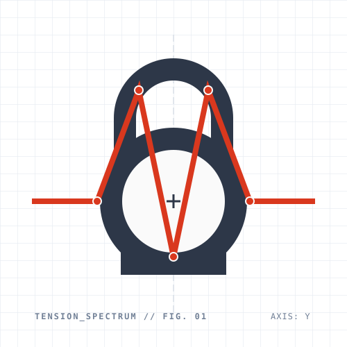
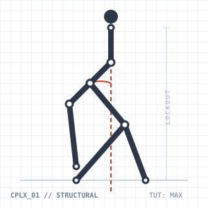

Tension Spectrum este un framework de antrenament axat pe manipularea tensiunii musculare. Construit pe principii solide de forță funcțională din școala StrongFirst, folosește complexe de mișcări pentru a dezvolta simultan rezistența, mobilitatea extremă și hipertrofia, fără a compromite sistemul nervos central.
TIPĂREȘTE / DESCARCĂ PROTOCOLUL (PDF)Planul Săptămânal
LUNI: FORȚĂ & BALISTICĂ
Focus: Sinergie Push-Pull & Putere
- Bloc Forță (Tensiune Maximă): Tracțiuni (Tactical Pull-ups / Inele) sau Ramat Greu + Flotări Hardstyle / SFB.
- Format: 3-5 serii x 3-5 repetiții (focus pe tensiune, pauze generoase).
- Bloc Balistic (Alactic pur): Swings Grele sau Snatches.
- Format: Serii scurte, explozie maximă, pauze lungi.
- Finalizare: Loaded Carries (Farmer’s Walk sau Suitcase Carry).
MARȚI: LOADED STRETCHING & ZONE 2
Focus: Mobilitate sub Tensiune & Bază Aerobică

Complexul 1: Mobilitate Structurală
3-5 runde / mână, greutate mică/medie. Un test suprem de mobilitate toracală și stabilitate pe centura scapulară.
- Intrare în Deep Squat (rămâi jos în poziție controlată)
- Curl Clean (adus la umăr direct din poziția de Squat)
- Sots Press (presă din Squat → ajungi în lockout overhead)
- Ridicare în picioare (menținând bila perfect deasupra capului)
- Windmill (control pe alinierea brațului și deschiderea șoldului)
- Coborâre în Rack Position
- Bent Press (lockout secundar deasupra capului din poziție asimetrică)
- TGU Down (coborâre controlată pe spate, brațul rămâne complet blocat)
- TGU Up (urcare completă în picioare, brațul blocat; închizi cercul în picioare)
- Condiționare Aerobică: Alergare în Zone 2 / Cardio pur pentru protecție mitocondrială.
MIERCURI: PAUZĂ ACTIVĂ
Focus: Regenerare
- Mișcare ușoară.
- Tehnici „Fast & Loose” (scuturarea membrelor pentru eliminarea tensiunii).
- Stretching de decompresie.
JOI: STRENGTH-ENDURANCE
Focus: Capacitate Lactică (Supapa Lactică)

Complexul 2: Protocol Scară Descendentă (10 - 8 - 5 - 3 - 2 - 1)
Greutate recomandată: ~80% RM (o greutate cu care poți face maxim 12 repetări „all-out”).
- Execuție pe treaptă (Stânga / Dreapta): [X] Clean & Press + [X] KB Front Squats (în poziție de rack).
- Regulă absolută: Bila NU atinge solul pe parcursul întregii trepte! Trecerea de la Press la Squat și schimbul de mâini (Swing switch) se fac fără pauză pe sol. Ultima treaptă (1) se execută în format clasic Iron Cardio (1 Clean + 1 Press + 1 Squat / pe fiecare mână).
- Pauză (între trepte): Recuperare activă 2 - 3+ minute în stil Fast & Loose. Nu se începe următoarea treaptă până când ritmul cardiac nu a revenit complet la normal.
VINERI: NEURO-RECOVERY
Focus: Descărcare Structurală
- Antrenament minimalist (stil Simple & Sinister) la intensitate medie (70%).
- Focus exclusiv pe calitatea mișcării și eliminarea tensiunii reziduale acumulate joi.
- Pregătire pentru weekend.
SÂMBĂTĂ & DUMINICĂ: RECOVERY TOTAL
Focus: Supracompensare
- Odihnă, refacere și asimilarea adaptărilor structurale.